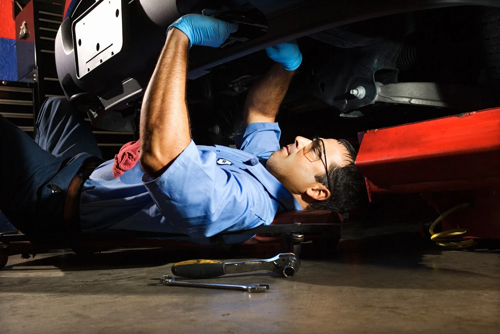

Wir kümmern uns.
Sie fahren weiter.
Service, Pickerl und Reparatur für alle Marken.
Persönlich betreut in Ihrer Familienwerkstatt in Wien.
In Wien-Favoriten für Ihr Auto da.
Eine Werkstatt.
Für Ihren Alltag.
Ihr Auto soll Sie zuverlässig begleiten. Wir kümmern uns um das, was es dafür braucht.
Seit über 40 Jahren betreut KFZ Burda als Familienbetrieb Fahrzeuge aller Marken und Typen. Ob regelmäßige Wartung, ein neues Geräusch oder ein fälliges Pickerl: In der Columbusgasse finden Sie einen direkten Ansprechpartner für Ihr Anliegen.
Mit der Werkstatt sprechenGut gewartet.
Sicher unterwegs.
Vom Ölwechsel bis zur Reparatur:
das passende Service für Ihr Fahrzeug.
Sie wissen noch nicht, was nötig ist? Erzählen Sie uns von Ihrem Anliegen.
01 / 604 14 68 anrufenDas gesamte Leistungsangebot +
Service und Wartung · § 57a-Begutachtung · Computerdiagnose · Sicherheitsanalyse · Urlaubscheck · Ölwechsel · Klimaanlagenwartung · Reifenservice · Bremsen · Auspuff · Lenkung und Fahrwerk · Motor und Kupplung · Elektrische Reparaturen · Karosseriearbeiten und Unfallinstandsetzung · Oldtimerbetreuung

SORGFALT BIS INS DETAILIhr Anliegen zählt.
Ihr Auto auch.
Persönlicher Kontakt beginnt mit einem Gespräch.
Ein Auto ist mehr als ein Werkstatttermin. Es bringt Sie zur Arbeit, in den Urlaub und durch den Alltag. Burda verbindet langjährige Erfahrung mit Service für alle Marken – von der Wartung bis zu mechanischen und elektrischen Reparaturen.
Karosseriearbeiten und Unfallinstandsetzung gehören ebenfalls zum Angebot. Besprechen Sie den Schaden direkt mit der Werkstatt.
Ein Klassiker.
Besondere Sorgfalt.
Ihr Oldtimer verdient Aufmerksamkeit für die Details. KFZ Burda betreut auch ältere Fahrzeuge – mit Erfahrung und nach Möglichkeit mit Original-Ersatzteilen.
Oldtimer-Betreuung anfragenIhr Fahrzeug kennenlernen
Nennen Sie Modell, Baujahr und Ihr Anliegen. So kann die Werkstatt die nächsten Schritte mit Ihnen besprechen.
Passende Arbeiten besprechen
Von der Wartung bis zur Reparatur: Klären Sie persönlich, welche Betreuung für Ihren Klassiker möglich ist.
Originalteile im Blick
Für Oldtimer werden laut bisheriger Website nach Möglichkeit Original-Ersatzteile verwendet. Verfügbarkeit bitte individuell klären.
Ihre Fragen.
Ein klarer Weg.
Service, Pickerl oder Oldtimer? Hier finden Sie die ersten Antworten.
Persönlich nachfragenWie vereinbare ich einen Termin?+
Rufen Sie unter 01 / 604 14 68 an oder schreiben Sie an kfz-burda@aon.at. Nennen Sie Ihr Fahrzeug und Ihr Anliegen. Ihren Termin stimmen Sie direkt mit der Werkstatt ab.
Betreut Burda auch meine Automarke?+
Ja. Die Familienwerkstatt wartet und repariert Fahrzeuge aller Marken und Typen.
Kann ich mein Pickerl bei Burda machen lassen?+
Ja. Die § 57a-Begutachtung gehört zum Leistungsangebot. Bitte fragen Sie telefonisch nach einem Termin für Ihr Fahrzeug.
Ist mein Oldtimer bei Burda richtig?+
Burda bietet auch Betreuung für Oldtimer. Laut bisheriger Website werden dafür nach Möglichkeit Original-Ersatzteile verwendet. Besprechen Sie Modell und benötigte Arbeiten persönlich.
Wann ist die Werkstatt geöffnet?+
Laut bisheriger Website: Montag bis Donnerstag 08:30–17:00 Uhr, Freitag 08:30–13:00 Uhr. Da Verzeichnisse abweichende Zeiten nennen, bestätigen Sie Ihren Besuch bitte telefonisch.
Ein Anruf genügt.
Wir sind in Favoriten.
Fragen Sie Ihren Wunschtermin an.
Direkt bei Ihrer Werkstatt.
Columbusgasse 95
1100 Wien
Route in Google MapsPersönliche Terminvereinbarung per Telefon oder E-Mail.
Unsere Öffnungszeiten
TERMIN ANFRAGEN- Montag–Donnerstag
- 08:30–17:00 Uhr
- Freitag
- 08:30–13:00 Uhr
- Samstag & Sonntag
- Geschlossen
Zeiten laut bisheriger Website. Bitte bestätigen Sie Ihren Besuch telefonisch, da Verzeichnisse abweichende Zeiten nennen.
Nennen Sie Modell und gewünschten Service. Die Werkstatt stimmt Ihren Termin persönlich mit Ihnen ab.
Wir kümmern uns.
Vom ersten Anruf an.
Wartung, Pickerl oder Reparatur: Besprechen Sie mit uns, was Ihr Auto braucht.